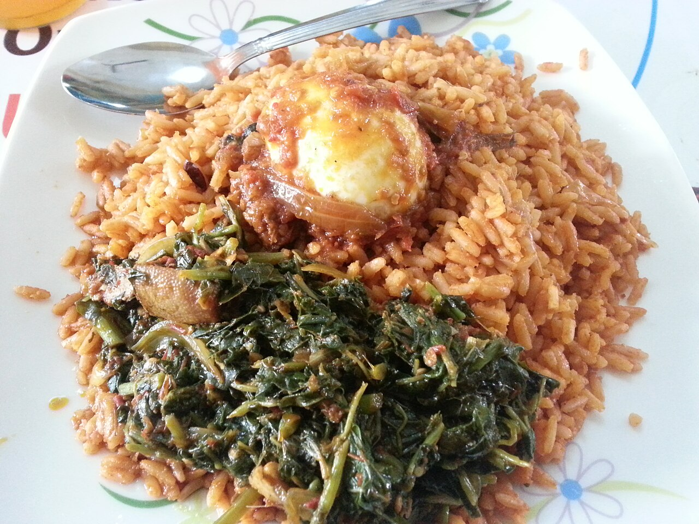
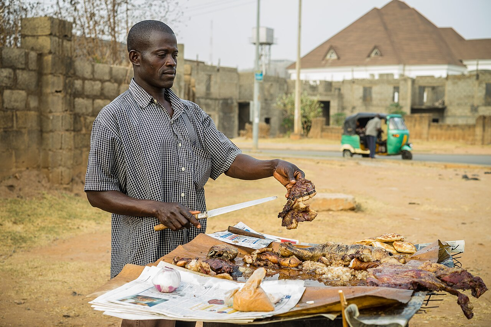

Jollof Rice
A smoky, tomato-rich one-pot rice that headlines every celebration across West Africa.
View recipe →
Food in West Africa is social. Meals are shared from large communal bowls, and dishes such as jollof rice are the centrepiece of weddings and festivals. Cooks layer flavour with a base of tomato, onion and pepper, then finish with locally fermented seasonings like iru (locust beans).

A smoky, tomato-rich one-pot rice that headlines every celebration across West Africa.
View recipe →